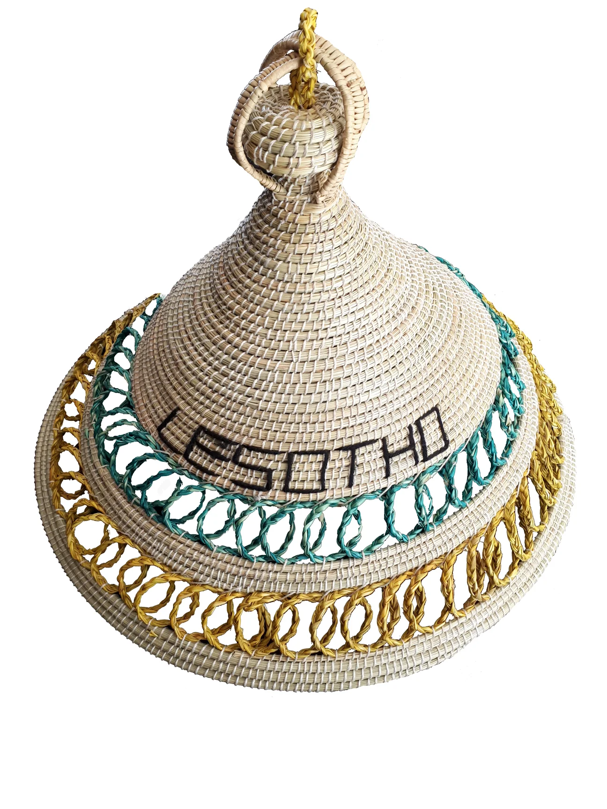
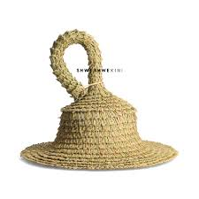
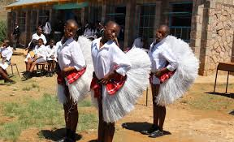

Seshoeshoe
A traditional dress for women,created from the distinctive Seshoeshoe (or shweshwe)fabric known for its bold colors and church gatherings.see more
mokorotlo
The fomous conical hat is made from moseha grass and has a top knot shape inspired by Qiloane mountain.see more
thethana
Thethana is like ribbon skirts and other products that promote Basotho culture internationally according to reporter Lesotho.see more
seana marena

This blanket symbolisis basotho clan,heritage and background is made up with wool provide essential warmth and protection from the cold and wind inthe mountain relion of lesotho. see more
Tshetshe
The tshetshe is part of the traditional clothing worn by Basotho women especially during their coming of age retuals the Lebollo la basadi which signifies a girls trasition to womanhood.see more this hat is designed for women to protect their
Sefaha
Traditional young girls would be dressed in a neckpiece made out of clay beads known as sefaha.see more
Kholokoane
the majrity of this head gear is made out of straw and animal skins.see more
Sefatla

Sefatla is a shoe that is made out of facial skin of an ox which is scraped,dried and softenrd then cut into the desired and shoes size.see more
Mose wa khomo

The skirt made for aldults girls and would made out of woven fibre or a cow skin .see more
mokorotlo
fff
Lesira
ffgg.see more
Lehlosi
A blanket made out of skins of wild cats or a leopards for chiefs.
Tshea
An under garment made out of sheep skin cut in a triangular shape and tied around the body in such a way as to cover a private part.see more
poone
a symbol of reproduction and prosperity..see more
sefate
often featuring a design of an ace of hearts or corncob signifying wealth and fertility.see more
poone
a symbol of reproduction and prosperity.see more
modiyanyeo
it is manufactured from an indigenous grass known as mosea or leholi.see more
litolobonya
The skin is made with pastic of the maize maeal. see more
morena
Every blanket with a with a symbol of crowns.see more
kuoane
A first basotho hat made out of jackal's skin and tail.see more